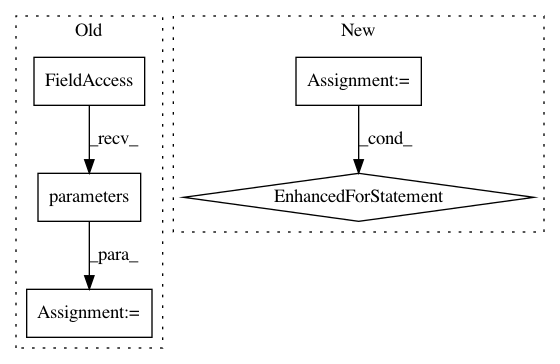

428516056abe41f135133e732a8d44af6ce9a234,rllib/policy/torch_policy.py,TorchPolicy,learn_on_batch,#TorchPolicy#Any#,221
Before Change
else:
torch.distributed.all_reduce_coalesced(
grads, op=torch.distributed.ReduceOp.SUM)
for p in self.model.parameters():
if p.grad is not None:
p.grad /= self.distributed_world_size
info["allreduce_latency"] = time.time() - start
self._optimizer.step()
After Change
// Loop through all optimizers.
grad_info = {"allreduce_latency": 0.0}
for i, opt in enumerate(self._optimizers):
// Erase gradients in all vars of this optimizer.
opt.zero_grad()
// Recompute gradients of loss over all variables.
loss_out[i].backward(retain_graph=(i < len(self._optimizers) - 1))
grad_info.update(self.extra_grad_process(opt, loss_out[i]))
if self.distributed_world_size:
grads = []
for param_group in opt.param_groups:
for p in param_group["params"]:
if p.grad is not None:
grads.append(p.grad)
start = time.time()
if torch.cuda.is_available():
// Sadly, allreduce_coalesced does not work with CUDA yet.
for g in grads:
torch.distributed.all_reduce(
g, op=torch.distributed.ReduceOp.SUM)
else:
torch.distributed.all_reduce_coalesced(
grads, op=torch.distributed.ReduceOp.SUM)
for param_group in opt.param_groups:
for p in param_group["params"]:
if p.grad is not None:
p.grad /= self.distributed_world_size
grad_info["allreduce_latency"] += time.time() - start
// Step the optimizer.
opt.step()
grad_info["allreduce_latency"] /= len(self._optimizers)
grad_info.update(self.extra_grad_info(train_batch))
return {LEARNER_STATS_KEY: grad_info}
In pattern: SUPERPATTERN
Frequency: 4
Non-data size: 5
Instances
Project Name: ray-project/ray
Commit Name: 428516056abe41f135133e732a8d44af6ce9a234
Time: 2020-04-15
Author: sven@anyscale.io
File Name: rllib/policy/torch_policy.py
Class Name: TorchPolicy
Method Name: learn_on_batch
Project Name: OpenNMT/OpenNMT-py
Commit Name: 031392ff2cbb5703558d17a676a456521f754190
Time: 2016-12-15
Author: soumith@fb.com
File Name: mnist/main.py
Class Name:
Method Name:
Project Name: OpenNMT/OpenNMT-py
Commit Name: b87368e1e7fd832b505db9cc08015ac7af8f95de
Time: 2016-12-23
Author: jvanamersfoort@twitter.com
File Name: VAE/main.py
Class Name:
Method Name:
Project Name: ray-project/ray
Commit Name: 428516056abe41f135133e732a8d44af6ce9a234
Time: 2020-04-15
Author: sven@anyscale.io
File Name: rllib/policy/torch_policy.py
Class Name: TorchPolicy
Method Name: compute_gradients